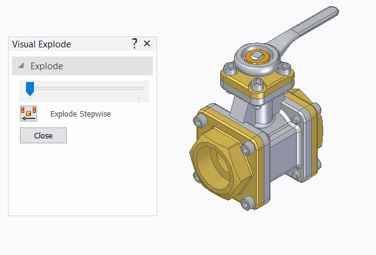
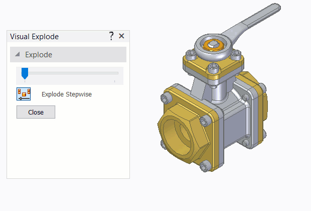

Visual Explode command
Use the Visual Explode command to dynamically explode and collapse the active assembly for temporary visualization.
Steps
The basic steps for dynamically exploding an assembly are:
-
Defining the explode settings.
- Explode stepwise off
-
Explodes all the parts and subassemblies at the same time with specified space between top-level parts, subassemblies, and parts of subassemblies.
This is a default setting.

- Explode stepwise on
-
Explodes top-level parts first, then subassemblies, and then node subassemblies and so on.

-
Moving the slider to the right (to explode) or to the left (to collapse).
If the assembly is already exploded and then you turn Explode stepwise on, the exploded assembly will collapse and the slider will be reset to the zero position.